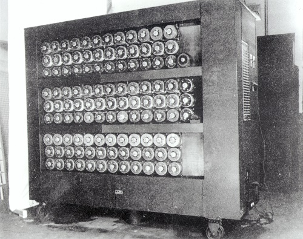

Alan Turing
° Foi um matemático, lógico, criptoanalista e cientista da computação britânico.
° Criou a Máquina de Turing, que desempenhou um papel fundamental na criação do computador moderno.
° Durante a Segunda Guerra Mundial, Turing trabalhou para a inteligência britânica, em um centro especializado em quebra de códigos.

A Máquina de Turing
A Máquina de Turing é um modelo matemático abstrato que serviu de base para o desenvolvimento dos computadores modernos. Ela foi capaz de simular qualquer algoritmo computacional.